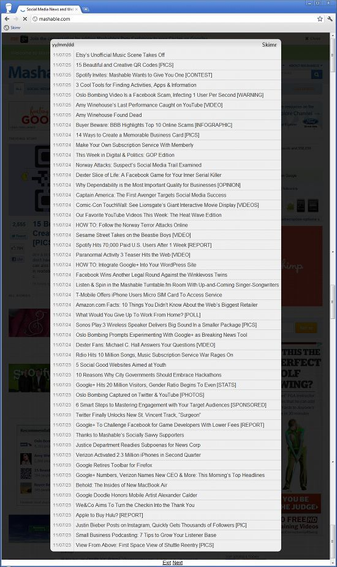

Skimr
Distraction free site overviews
With one click, see all of a website's posts without suffering through interminable loading times nor browsing through endless archives. Skimr is a bookmarklet, so it'll always be close at hand, its installation is harmless and it's easy to remove.
Skimr
Try it now!
Click to see how it works as if on TechCrunch.com
To install Skimr, simply drag the red button to you bookmarks bar or right-click it and save it to your bookmarks
Sorry Internet Explorer people, Skimr was only tested in Chrome and Firefox.
